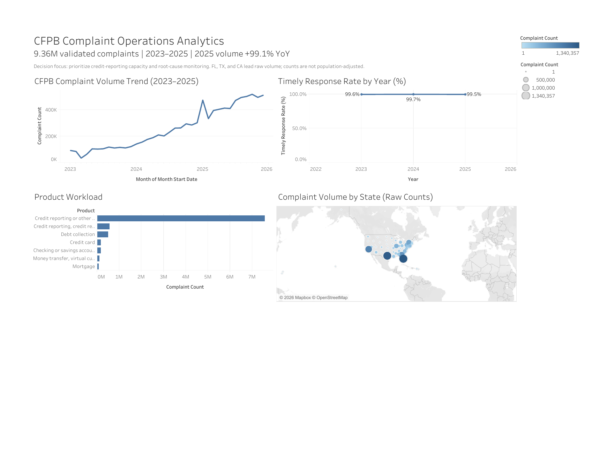

01
Complaint operations
CFPB Complaint Operations Analytics
Where is complaint workload growing, and which product and issue categories deserve operational attention?
Question
Diagnose workload, response coverage, product mix, and geographic concentration.
Method
Python preparation → Snowflake → dbt models and tests → Tableau extract.
Finding
Validated 9,363,711 unique complaints across complete 2023–2025 records.
Counts describe observed published workload; they are not causal rankings of company quality or consumer harm.
- Tableau
- Snowflake
- dbt
- SQL
- Python

9.36M validated complaints · 2023–2025